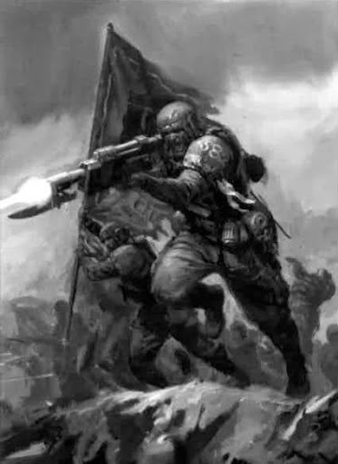

The Planet of Mundigura is a planet that is vitally important to the Imperium. A mining planet producing more ore than the next three subsectors around it and being one of the most important mining worlds in the Uhulis Sector of Segmentum Tempestus. To give up on such a planet would be the Imperium giving up on its own production of much needed war-machines and weapons, to fuel the everlasting wars across the galaxy. These are the stories of the Mundigura Jungle Wars, an embarrassment upon the Imperium and a loss that created an entirely new Traitor Guard Warband. Unfamiliar regiments will face down knowledgeable militia in brutal jungle guerrilla warfare. Lying in the far south of Segmentum Tempestus in the Uhulis Sector the world of Mundigura is distinctly unique for its rich ores and thus giving it the designation of “mining world”. Its equator features deserts spanning 300 terran miles in length. In the middle of Mundigura’s deserts lies the capital city of Kartaris. At the edges of the deserts to the North and the South lies thousands of miles of jungles. Thousands of mining camps dot the land pulling hundreds metric tons of ore daily to be sent to the forgeworlds of the Adeptus Mechanicus. Its jungles are as unsafe as most imperial death worlds with only a few limited trails making certain that imperial laborers have at least a cursory degree of safety under the jungle canopy.
Still many Mundigurans fear ferocious animals like the Undergrowth Spine-Ripper and the Shabnak Step Demon. This is a hot and humid planet that would test any group of warfighters, even those adept in the art of jungle warfare.
For mor details download the Mundiguan Jungle Wars PDF (Work In Progress)
Download Mundiguran Jungle Wars